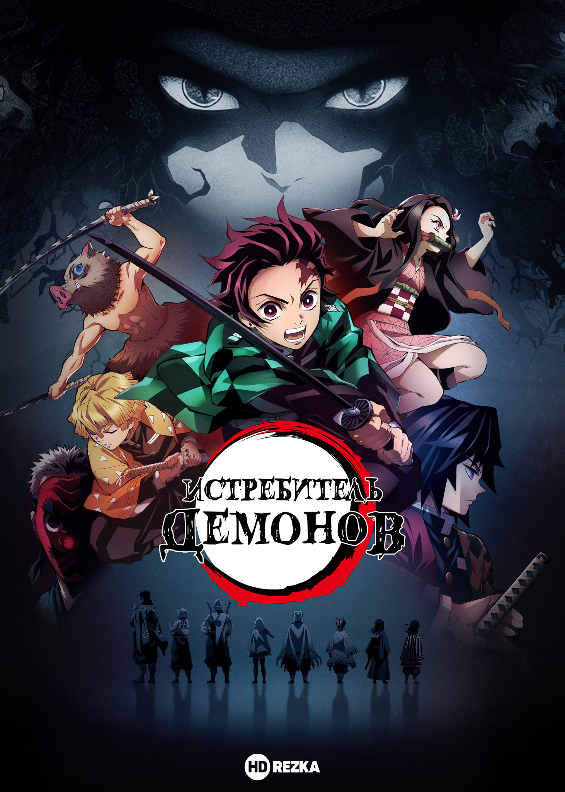

Войти
на сайт


Смотреть Клинок, рассекающий демонов все серии и сезоны
1 сезон
1 серия
2 серия
3 серия
4 серия
5 серия
6 серия
7 серия
8 серия
9 серия
10 серия
11 серия
12 серия
13 серия
14 серия
15серия
16 серия
17 серия
18 серия
19 серия
20 серия
21 серия
22 серия
23 серия
24 серия
25 серия
26 серия
Жанры: боевик, фэнтези и мистика.
Темы: демоны, историческое и сёнен.
Годы выпуска: 2019, 2021.
Оригинальное название: Kimetsu no Yaiba
Возрастной рейтинг: 18+
Темы: демоны, историческое и сёнен.
Годы выпуска: 2019, 2021.
Оригинальное название: Kimetsu no Yaiba
Возрастной рейтинг: 18+
Ходят слухи, что в местных лесах обитают кровожадные демоны, которые питаются человеческой плотью.
Вот только последние инциденты были так давно, что люди позабыли об опасностях дремучих лесов. Многие жители деревни считают, что сказание о демонах это просто страшилки и легенды. Танджиро Камадо живёт в маленькой деревушке, и он заботится о своей семье, ведь недавно исчез отец. Парню приходится работать на шахте и продавать уголь в городе. Очередная поездка на рынок не сулила неприятностей, но по возвращении домой парня ожидало чудовищное зрелище. Камадо увидел окровавленные тела родственников, которые были разбросаны во дворе. Оказалось, что лесные демоны напали на деревню и вырезали всех жителей. Чудом удалось выжить сестрёнке Нэзуко, но и у неё были проблемы, ведь существа превратили её в демона.
Фэнтезийный мир наполнен жуткими тварями и разными опасностями, с которыми придётся повстречаться храброму Танджиро.
Если смотреть аниме "Kimetsu no Yaiba" можно узнать, сможет ли юноша помочь сестре избавиться от проклятия, а также отыскать убийц семьи.
Навигация
по сайту
Аниме
Форум
Нарутопедия
Смотреть Наруто
Манга Наруто
Новеллы Наруто
Видео-истории
Видео-оброзы
Все герои
Список техник
Ваканции
Оповещения ВК и ТС
Аниме-почта
наши контакты